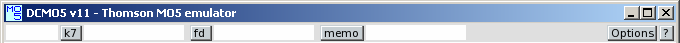
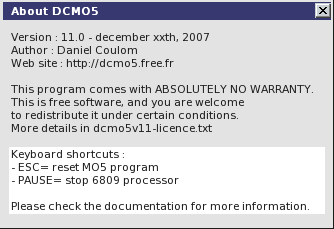
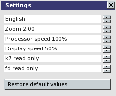
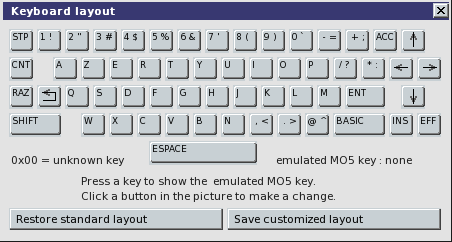
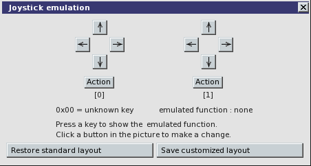
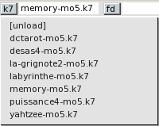

DCMO5 v11 : Thomson MO5 emulator
DCMO5 v11 is a Thomson MO5 emulator, created by Daniel Coulom (mail to danielcoulom at gmail dot com).
DCMO5 website is dcmo5.free.fr.


Functions
DCMO5 v11 emulates :
DCMO5 does not emulates :
- Leanord nanoreseau (network).
- QD90-128 Quick Disk Drive.
- Other expansion modules : IN57-001, DI90-011, etc.
DCMO5 user interface comes with two languages : English and French.
Technical tips
DCMO5 is a 'free software'.

- It is distributed under the terms of the GNU GPL (more in the official licence)
- It is programmed with the C language
- It uses SDL library for audio and video.
- It uses SDL_ttf library with Bitstream Vera font.
- User interface has been designed specially for this project.
- It doesn't use hardware specific or system specific function, to allow easy port.
- It can run with Windows, Linux, Mac-OS and many other systems.
Installation
DCMO5 should run on every PC with a Pentium II or better processor, with an audio adapter, a decent video adapter, running Windows or Linux 1998 or newer release. It also runs on other platforms. The list of compatible systems will be added here, depending on the users feedback.
Tested with :

 To be tested with :
To be tested with :


 and more...
and more...
All platforms
- Create a new folder and name it dcmo5 (or any other name you like).
- Download dcmo5v11.0.zip or dcmo5v11.0.tar.gz to this folder.
- Unpack the archive, keeping the directory structure.
- Install SDL and SDL_ttf libraries.
- Compile DCMO5, depending on your operating system (not required with Windows).
- /software subfolder contains MO5 tape images (.k7 extension), disk images (.fd extension) and MEMO5 cartridge images (.rom extension). You can add your own files (look also at dcmoto collection).
Windows
Dcmo5.exe executable file comes with dcmo5. It doesn't need to be compiled. Just double-click the dcmo5.exe filename to run dcmo5. A shortcut may be added to the Desktop or to the Task Bar. Please note : SDL and SDL_ttf libraries must be installed. SDL.dll and SDL_ttf.dll files may be stored in dcmo5 folder, or in any other folder searched for executable programs, ie c:/windows/system32.
Linux
After SDL and SDL_ttf library installation, compile dcmo5 with the makefile coming with the distribution. Open a terminal in dcmo5 folder and execute a 'make' command.
Mac-OS
To be continued...
User Guide
Start dcmo5 with the suitable command, depending on your operating system. With Windows, for instance, you can double-click dcmo5.exe filename or use a shortcut.
Emulator commands
All emulator commands are done through menu bar at the top of the program main window.

- About DCMO5
Click [?] button on the right of the menu bar.

- Settings
Click [Options] button on the right of the menu bar, and select Settings...
The buttons on the right of each parameter can be used to change the value.
[Restore default values] button initializes all the values.
Increasing display speed and processor speed dramatically increases resource usage. With a slow computer, when audio output is poor, you need to decrease display speed until you get good sound.

- Keyboard layout
Click [Options] button on the right of the menu bar, and select Keyboard...
Key codes depend on operating system and keyboard type.
It is not possible recognize every configuration. Default in dcmo5 is a standard French keyboard with Windows XP or Linux. For other configurations the keyboard layout must be redefined. It is a straightforward process : each MO5 key is emulated with one key of the actual keyboard. Type a key on the keyboard. Matching MO5 key is shown. If not correct, click the corresponding MO5 key picture. Repeat this process for each of the 58 MO5 keys. Then you should save the customized keyboard layout, and it will be used each time you will run DCMO5.

- Joystick emulation
Click [Options] button on the right of the menu bar, and select Joysticks...
Joysticks are emulated with the keyboard (use preferably the numeric keypad). For each joystick, four keys have to be choosen for directions and one for fire. Process is exactly the same as for keyboard layout. Please note that the same key can be used for both MO5 keyboard and MO5 joystick emulation. Make your choice to avoid mix-up when running a program testing both keyboard and joysticks.

- Load tape, disk or MEMO5 cartridge
Click [k7], or [fd], or [memo] button of the menu bar...
Using [k7] button, tape images (.k7 files in software subfolder) are listed in a clickable menu. Click the file name to load the tape. You can also click [unload] to unload the tape, and [next...] or [back to the beginning] if these lines are displayed. Same usage for [fd] buton with disk images (.fd files in software subfolder), and for [memo] button with MEMO5 images (.rom files in software subfolder). Don't forget to check settings for tape and disk write protection. To make an empty tape or disk, create an empty file in software subfolder, and name it with .k7 or .fd extension. Please not that you cannot use a new disk before formating it with DOS Basic DSKINI command.

MO5 commands
Look at 'Guide du MO5' (in French), at dcmoto Documentation page.

MO5 game and program commands
Download user guides at dcmoto Programmes page.
{kind=link}
{kind=link}
{kind=link}
{kind=link}
{kind=link}
{kind=link}
{kind=link}
{kind=link}
{kind=link}